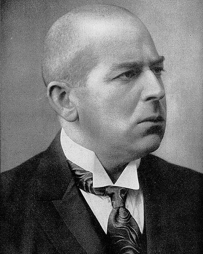

Ideologies / Reactionary
What is Prussian Socialism?
Prussian Socialism is a political ideology in the Reactionary family. Spengler claimed that true socialism is not Marx's doctrine but the old Prussian ethic of duty, discipline and service, in which every person, worker or owner, holds a rank as a servant of the whole. He set it against English liberalism, which he saw as the rule of private wealth through parliament and trade. Property remains, but as an office held on the state's behalf, within an economy directed from above. Germany should reject Marxism and parliamentary democracy alike.
Socialism as duty and service to the state, not as class struggle.
Defined from: Oswald Spengler, Prussianism and Socialism (1919)
See how close you are to Prussian Socialism Dare a friend to answer as one


Where Prussian Socialism stands on 13 axes
Each axis runs from 0 to 100. A score of 50 is the middle. On a classic compass it sits in the Authoritarian Left quadrant.
| Axis | Position | Score | In words |
|---|---|---|---|
| EconomyMarket to Planned | 75 | Strongly Planned | |
| OwnershipPrivate to Collective | 45 | Balanced | |
| RightsLiberty to Security | 85 | Very strongly Security | |
| GovernmentDemocracy to Autocracy | 85 | Very strongly Autocracy | |
| StructureDecentralised to Centralised | 90 | Very strongly Centralised | |
| NationInternationalist to Nationalist | 90 | Very strongly Nationalist | |
| ImmigrationMulticulturalist to Assimilationist | 80 | Strongly Assimilationist | |
| ValuesProgressive to Traditional | 75 | Strongly Traditional | |
| TechnologyAccelerationist to Precautionary | 35 | Leans Accelerationist | |
| EnvironmentIndustrialist to Environmentalist | 20 | Strongly Industrialist | |
| ReligionSecular to Religious | 40 | Leans Secular | |
| MilitaryPacifist to Militarist | 90 | Very strongly Militarist | |
| TradeFree Trade to Protectionist | 85 | Very strongly Protectionist |
Ideologies closest to Prussian Socialism
- Italian Fascism90% alike
- National Syndicalism89% alike
- British Fascism88% alike
- Ba'athism88% alike
- Nasserism88% alike
Its opposite on this map is Agorism, at 20%.
Parties near Prussian Socialism
- National Fascist PartyItaly. The Doctrine of Fascism (1932)90% alike
- United RussiaRussia. People's Programme (2021)81% alike
- Justicialist PartyArgentina. The Twenty Truths of Peronism (1950)81% alike
- KuomintangChina. Three Principles of the People (1924)79% alike
Common questions
What is Prussian Socialism?
Prussian Socialism is a political ideology in the Reactionary family. Spengler claimed that true socialism is not Marx's doctrine but the old Prussian ethic of duty, discipline and service, in which every person, worker or owner, holds a rank as a servant of the whole. He set it against English liberalism, which he saw as the rule of private wealth through parliament and trade. Property remains, but as an office held on the state's behalf, within an economy directed from above. Germany should reject Marxism and parliamentary democracy alike.
What does Prussian Socialism believe?
In one line: Socialism as duty and service to the state, not as class struggle. Its strongest positions are Centralised, Nationalist, Militarist. Spengler claimed that true socialism is not Marx's doctrine but the old Prussian ethic of duty, discipline and service, in which every person, worker or owner, holds a rank as a servant of the whole. He set it against English liberalism, which he saw as the rule of private wealth through parliament and trade. Property remains, but as an office held on the state's behalf, within an economy directed from above. Germany should reject Marxism and parliamentary democracy alike.
Who founded Prussian Socialism?
Prussian Socialism is defined here from Prussianism and Socialism (1919) by Oswald Spengler. The thinker most tied to it is Oswald Spengler (1880 to 1936).
Is Prussian Socialism left wing or right wing?
On a classic two axis compass Prussian Socialism falls in the Authoritarian Left quadrant, which means the economic left and the authoritarian side. Left and right hide a lot, though, which is why EthosScales scores it on thirteen separate axes.
How is Prussian Socialism different from Italian Fascism?
They are close: 90% alike. The biggest gaps are on Religion, where Prussian Socialism scores 40 and Italian Fascism scores 55, and Economy, where Prussian Socialism scores 75 and Italian Fascism scores 65. On each axis, 0 is one end and 100 is the other.
Think this is wrong? Suggest a correction. The scores are editorial estimates.